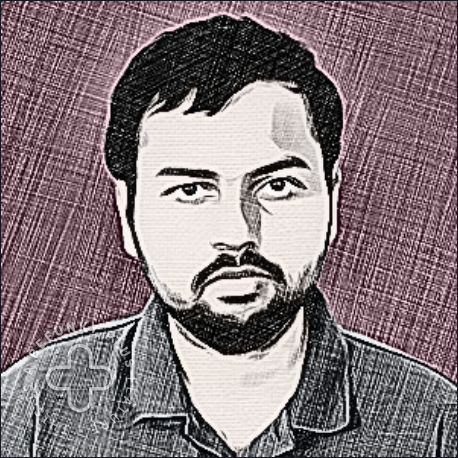

|
Aditya (Kingston) Sarkar I am a graduate student at Electrical and Computer Engineering department at UC San Diego. From June to August 2022, I was a visiting research scientist at UC Los Angeles CS department. I was hosted and sponsored jointly by Sriram Sankararaman and Serghei Mangul . I did my bachelors in Electrical Engineering from IIT Mandi, where I was advised by Adarsh Patel and Sreelakshmi PM. I worked in the field of Spoken Language Systems and its intersection with Deep Learning. I am the recipient of the National Talent Search (NTS) Scholarship (2017) and was sponsored by NCERT from 2017 to 2023. |
 |